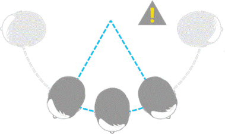
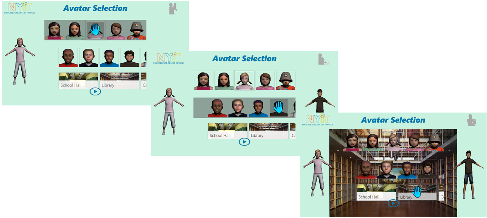

PC Requirements
Hardware and Software Requirements
Hardware and Software Requirements
Hardware:
- Kinect for Xbox 360 sensor
- Computer with a dual-core, 2.66-GHz or faster processor
- Windows 7 –compatible graphics card that supports DirectX® 9.0c capabilities
- 2-GB RAM (4-GB RAM recommended)
Software:
- Windows 7 (x86 or x64)
- Visual Studio 2010 Express(or other 2010 edition)
- Microsoft .NET Framework 4.
Kinect Introduction
Kinect 360 Sensor
Kinect 360 Sensor
Kinect 360 sensor is a horizontal bar connected to a small base with a motorized pivot and is designed to be positioned lengthwise above or below the video display. The device features an "RGB camera, depth sensor and multi-array microphone running proprietary software", which provide full-body 3D motion capture, facial recognition and voice recognition capabilities. The depth sensor consists of an infrared laser projector combined with a monochrome CMOS sensor, which captures video data in 3D under any ambient light conditions. The sensing range of the depth sensor is adjustable, and Kinect software is capable of automatically calibrating the sensor based on gameplay and the player's physical environment, accommodating for the presence of furniture or other obstacles.
General Skeletal Tracking
Skeletal Tracking allows Kinect to recognize people and follow their actions. Using the infrared (IR) camera, Kinect can recognize up to two users and track them in detail in the field of view of the sensor. An application can locate the joints of the tracked users in space and track their movements over time.
Skeletal Tracking is optimized to recognize users standing or sitting, and facing the Kinect; sideways poses provide some challenges regarding the part of the user that is not visible to the sensor.
To be recognized, users simply need to be in front of the sensor, making sure the sensor can see their head and upper body; no specific pose or calibration action needs to be taken for a user to be tracked.
Kinect field of view of the users is determined by the settings of the IR camera, which are set with the Enumeration. In default range mode, Kinect can see people standing between 0.8 meters (2.6 feet) and 4.0 meters (13.1 feet) away; users will have to be able to use their arms at that distance, suggesting a practical range of 1.2 to 3.5 meters.
In near range mode, Kinect can see people standing between 0.4 meters (1.3 feet) and 3.0 meters (9.8 feet); it has a practical range of 0.8 to 2.5 meters.
NYIT Educational Avatar Project
This project is a component based application, which means that existing programs have been used and customized according to this project’s requirements. I based this project mainly on two programs available to download on Microsoft Windows SDK 1.8:
- Control Basics
- Avateering XNA
To build an interactive menu I used the Control Basics application which is a basic example on how to create a custom menu. Regarding the gameplay, I used the Avateering XNA application which was an example that showed a user body tracked avatar.
Therefore, after I had these two components, my sole focus was to code and customize these two applications in order to create the NYIT application.
Avatar Selection
Due to the short amount of time we had before the Kids event, I could not afford to spend time creating individual unique kid avatars. As a solution, we purchased two sets of ten avatars kids on www.turbosquid.com as showed below.
The purchased avatars came with empty structure, which means that only the skin was present while the bone structure, needed in order to animate the avatar, was not there. Therefore, I had to manually create, for each avatar, a bone structure before I could import the models into the NYIT project.
In order to do so, I used a modelling software called Autodesk 3Ds Max. As we can see in the figure below, I loaded a model on 3Ds Max.
As we can see in figure below, I created a “biped” which is like the bone structure of the model.
As we can see in the figure above, I centered the biped on the model and then I added it in the parameter section to create your envelopes. The envelope allows the skin modifiers to link the biped and the model together so that the actual avatar can be animated. I saved the workspace and exported the new rig to a new FBX file. I repeated this process for each avatar.
In order to map the skeleton joints tracked from the Kinect sensor to the avatar joints, I had to follow the mapping on figure above. On the left side we have the bone map joints for the avatar and on the right side we have the bone map joints for the skeleton tracked by the Kinect sensor. As you can see, the Kinect sensor can only track 20 bones. Due to this limitation, I focused solely on these 20 bones for the model map. The mapping happens in the actual code.
This function configures the mapping between the Nui Skeleton bones/joints and the Avatar bones/joints.
Application Outcomes
As you can see in the figure above, when the user launches the application, the NYIT logo and the title “EDUCATIONAL AVATAR PROJECT” appear for a couple of seconds on screen before redirecting the user into the main menu showed in the figure below.
As you can see in the figure above, the main menu is composed by three user selections. The selection is made by a hand gesture as the Kinect will detect all of the user’s movements. On the first row, we have the first selection in which the user can select the first avatar. On the second row, the user will select the second avatar. On the third row, the user will select the scenario in which the scene will take place. Finally the user, after making all the selections, will be taken directly to the playfield by pushing the play button.
As you can see in the figure above, on the first row, the user has the ability to select the first avatar. On the second row, the user will select the second avatar. On the third row, the user will select the scenario in which the scene will take place
As we can in figure above, in the first row, when the user selects the first avatar, it will appear full bodied on the left side of the screen. When the user selects the second avatar, it will appear full bodied on the right side of the screen. When the user selects the third scenario, it will appear full bodied on the center of the screen.
As you can see above, when all of the selections are made, the user can then push the play button which will redirect the user to the play field.
Right after the user pushes the play button, the gameplay will start. The three possible gameplays are showed in the figure above.
References
3D kid models:
Microsoft .NET Framework 4.5
Visual Studio
Kinect for Windows SDK v1.8
Kinect for Windows Developer Toolkit v1.8
Microsoft XNA Game Studio 4.0
Autodesk 3DS Max